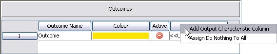

Working with Output characteristics
An Output column is added to the Outcome area and enables the user to assign a results characteristic and an associated value or value characteristic to each leaf node of the tree. It is this value or value characteristic that will be returned to the results characteristic when the value setter is processed for each record. When an outcome is assigned to the leaf nodes of a tree in value setter, the outcome name and associated colour as well as at least one result characteristic to which a value or value characteristic will be assigned.
Additional Output columns can be added to the Outcomes area of a value setter by the user.
| There is no limit to the number of outcome columns that can be added to the Outcome area of a value setter. |
To add an Output column
- With the Value Setter editor open, right click in the Outcomes area on the Output column and select Add Output Characteristic Column.

An output column will be created with <<Undefined>> as its value. - Repeat to create additional Output columns as required.
{kind=link}
You will now have the Output columns you require for the value setter's tree.
When a value setter is executed, the associated value or value characteristic that has been assigned in the Output column for the outcome for a specific leaf node will be returned to the result characteristic.
To assign an output characteristic to the Output column
- With the Value Setter editor open and in the Select Characteristic area, locate the logical data source you require.
- Click on the Expand + button to list all the characteristics contained in the logical data source.
- Select the characteristic you require.
- Drag and drop the characteristic onto the header of the output column in the Outcomes area.
The name of the characteristic will replace Output as the label of the output column.
Type a value, assign a value characteristic or configure the outcome to Do Nothing to fully configure the outcomes in the value setter.
If the user does not wish to enter a value or assign a value characteristic for a particular outcome the user can assign "Do Nothing".
To assign do nothing
- With the Value Setter editor open, in the Outcomes area, within the Output column for the outcome you require, right click on the cell and select Assign Do Nothing.
Do Nothing will be assigned as the value for this outcome's output cell. - Do Nothing can be assigned to all outcomes by right clicking on the Output column itself and selecting Assign Do Nothing To All.
When Do Nothing is encountered during execution, the leaf node is simply skipped, it will not appear in the trace.
There are two methods which can be used at the same time in Value Setter tree. These are:
- Value
- Value Characteristic
In addition, if the user does not wish to enter a value or assign a value characteristic for a particular outcome the user can assign Do Nothing.
To configure the output value by entering a value
- With the Value Setter editor open, in the Outcomes area, within the Output column, for the outcome you require, single click to enter the value you require (double-click to edit it once it has been entered).
- Type the value you wish to be assigned to the results characteristic for this outcome and press Enter.
- Repeat steps 1 to 2 until all the outcomes that need a value entered have been configured.
Continue configuring the value setter as required.
To configure the output value by assigning a value characteristic.
- With the Value Setter editor open and in the Select Characteristic area locate the logical data source you require.
- Click on the Expand + button to list all the characteristics contained in the logical data source.
- Select the characteristic you require.
- Drag and drop the characteristic into the Outcomes area, into the cell you require.
- Repeat steps 1 to 4 until all the outcomes that need a value characteristic assigned have been configured.
Continue configuring the value setter as required.
| You can copy and paste values for the value setter from Excel. However the size of the paste area must be the same size as the copy area. |
Clearing the value characteristic from the Outcomes area will also remove it from the tree.
To clear a value characteristic
- With the Value Setter editor open, in the Outcomes area within the output column, right click on the value characteristic you wish to remove and select Clear Characteristic.
The value characteristic will be removed. - Repeat to remove additional value characteristics as required.
Continue configuring the value setter as required.
An output column or output characteristic can be removed from the Outcome area.
To remove an Output Characteristic Column
- With the Value Setter editor open, right click in the Outcomes area on the Output column you wish to remove and select Remove Output Characteristic Column
The Output column will be removed including the values. - Repeat to remove additional Output columns as required.
Continue editing the value setter as required.
To remove an output characteristic
- With the Value Setter editor open, right click in the Outcomes area on the Output column you wish to remove and select Clear Output Characteristic
The output characteristic will be removed, the values will not. - Repeat to remove additional output characteristics as required.
Continue editing the value setter as required.